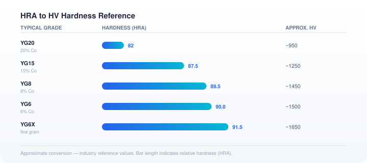

Tungsten carbide grade selection, explained plainly for engineers and buyers. If you don't find what you need, send us your drawing and we'll recommend a grade.
Standard grades (GB/T 18376). Typical values per the national standard — for reference. Actual properties depend on grain size, binder content and process.
| Grade | ISO | Co/Ni (%) | Grain (µm) | Density (g/cm³) | Hardness (≥HRA) | TRS (≥N/mm²) |
|---|---|---|---|---|---|---|
| YG6 | K10 | 6 | 1.6 | 14.7–15.1 | 90 | 2600 |
| YG6X | K10 | 6 | 0.8 | 14.7–15.1 | 91 | 2700 |
| YG8 | K20 | 8 | 1.6 | 14.6–14.9 | 89 | 2700 |
| YG8x | K20 | 8 | 0.8 | 14.6–14.9 | 90 | 2800 |
| YG8N | K20 | 8 | 1.6 | 14.6–14.9 | 88.5 | 2500 |
| YG10 | K40 | 10 | 1.6 | 14.3–14.7 | 88.5 | 2800 |
| YG13 | K40 | 13 | 1.2 | 14–14.3 | 87.5 | 3100 |
| YG13X | K40 | 13 | 0.8 | 14–14.3 | 88.5 | 3300 |
| YG15 | K40 | 15 | 1.6 | 13.8–14.2 | 86.5 | 3200 |
| YG15X | K40 | 15 | 0.8 | 13.8–14.2 | 88.5 | 3400 |
| YG15N | K40 | 15 | 1.6 | 13.8–14.2 | 86.5 | 3000 |
| YG18 | K40 | 18 | 1.6 | 13.6–14 | 85.5 | 3100 |
| YG20 | K40 | 20 | 1.0 | 13.4–13.8 | 85 | 3100 |
| YG20C | K40 | 20 | 2.0 | 13.4–13.8 | 83 | 3100 |
| YG25 | — | 25 | 1.6 | 13–13.2 | 82.5 | 2800 |
| YG25C | — | 25 | 2.0 | 13–13.2 | 81 | 2600 |
GB/T 18376 standard grades. For wear / impact / temperature / corrosion guidance, see the guides below.
Grades available via our partner mills for cutting-tool and PCD-body applications. Proprietary grades via partner mills.
| Grade | Grain | Density (g/cm³) | Hardness (HRA) | TRS (N/mm²) | Fracture (×10³) | Application |
|---|---|---|---|---|---|---|
| K06 | Fine | 14.93 | 92.4 | 2600 | 8 | Diamond-coated tools; graphite & composites |
| K09UF | Ultrafine | 14.45 | 93.8 | 3600 | 8 | Milling cutters, reamers; high-speed, ultra-hard materials |
| K10F | Fine | 14.45 | 91.8 | 3600 | 10 | Drills, mills; alloy steel, cast iron, stainless, heat-resistant |
| K10EF | Submicron | 14.45 | 92.2 | 3600 | 10 | Drills, mills; stainless, heat-resistant alloys, cast iron |
| K12UF | Ultrafine | 14.15 | 92.7 | 3600 | 10 | End mills, reamers; finishing alloy steel, aluminum, titanium |
| K12EF | Submicron | 14.20 | 91.4 | 4200 | 11 | Milling cutters; high-speed milling of 316L stainless |
| ES12 | Medium | 14.20 | 89.3 | 3800 | 14 | Tool bodies where the shank does not participate in cutting |
Nickel-binder grades for tooling and fixtures near magnetic fields; precision stamping plate grades with equivalents shown for cross-reference only.
| Grade | Co/Ni (%) | Grain (µm) | Density (g/cm³) | Hardness (≥HRA) | TRS (≥N/mm²) |
|---|---|---|---|---|---|
| YN11 | 11 | 1.2 | 14–14.3 | 88 | 2600 |
| YN13 | 13 | 1.2 | 14–14.3 | 87 | 2700 |
| YN15 | 15 | 1.2 | 13.8–14.1 | 86 | 3000 |
| YN18 | 18 | 1.2 | 13.5–13.8 | 84 | 3000 |
| YN20 | 20 | 1.6 | 13.4–13.7 | 83 | 3000 |
| YN25 | 25 | 1.6 | 12.9–13.2 | 81 | 2900 |
Used in forming moulds of magnetic materials, equipment guides, sealing rings and valve accessories. High hardness, long service life, good wear resistance, strong corrosion resistance.
| Grade | Grain | Co% | Hardness (HRA) | Density | Equivalent | Properties & Applications |
|---|---|---|---|---|---|---|
| K12EF | Submicron | 12 | 91.1 | 14.2 | 12EF/KD20 | Cr-added; stainless <0.6mm at <500spm; copper/aluminum foil, Li-battery |
| K15F | Submicron | 15 | 90.5 | 13.95 | H15F/CD650 | Thicker stainless ≥0.6mm; high wear & toughness; copper alloy, SPCC, aluminum |
| K10F | Submicron | 10 | 91.8 | 14.45 | H10F/KD10 | Thin stainless 0.1–0.3mm; phosphor bronze >500spm; lead frames |
| KS12 | Medium | 12 | 89.5 | 14.2 | H12F/KR466 | Copper ≥0.3mm; high-strength steel ≥0.4mm; silicon steel; high impact toughness |
Hardness is quoted in different scales. This chart maps Rockwell (HRA) to Vickers (HV) for common cemented carbide grades.

Quick answers to the questions we hear most from engineers and buyers.
YG6 or YG6X. Lower cobalt means higher hardness, so these grades resist abrasion best. Expect lower toughness — avoid heavy impacts.
When the part takes impact, shock or thermal cycling — not just abrasion. This is the classic failure pattern: a hard, low-binder grade wears well but chips or cracks when the valve slams, the punch strikes, or the die is loaded unevenly. If your current part fails by chipping or fracture rather than smooth wear, toughness — not hardness — is the problem.
The trade-off: more cobalt binder absorbs impact energy and stops cracks from propagating. You give up some hardness, and the part survives service that would shatter a hard grade:
Choose a high-toughness grade if any of these apply: impact or shock loading (valves slamming shut, punches striking, dies closing under load) · current failure mode is chipping or fracture rather than smooth wear · thermal or mechanical cycling · vibration or misalignment. Typical parts: valve seats and seat rings for high-pressure-drop service (YG15C class), sealing rings, stamping and cold-heading die inserts (YG20 class), special shapes under repeated impact.
Send a drawing or photo with the operating conditions and — if you know it — the current failure mode. That last piece often decides the grade. We'll confirm the grade and quote within 1–2 business days.
Low-binder, fine-grain grades. Hardness retention at elevated temperature is better with lower cobalt. Tell us the operating temperature and we'll confirm the grade.
Yes. Nickel-based binder grades for tooling and fixtures where magnetic interference matters — motor and sensor tooling, semiconductor fixtures, parts near magnetic measurement equipment.
Yes. For chemical valves and petrochemical parts, nickel-binder grades resist binder leaching far better than standard cobalt grades. Media, temperature and pressure determine the right grade.
Send a drawing (PDF, DXF, DWG, STEP) — or a photo and a short description. Include size, quantity and application. Quote within 1–2 business days. Start your request here.
For combined impact + abrasion service, tungsten carbide has no practical replacement. Ceramics win only in one narrow case: pure abrasion with no impact.
The decision rule: impact + abrasion together (valves slamming, punches striking, dies closing) → tungsten carbide. Pure abrasion, no impact, stable temperature (sliding wear, lapping) → ceramic (SiC) can be a valid, cheaper alternative. If your part fails by cracking or chipping, switching to a harder ceramic makes it worse — the problem is toughness, and ceramic has the least of it.
Send a drawing or photo plus the failure pattern — a photo of the failed part tells us more than a spec sheet. We'll recommend the material and grade, and quote within 1–2 business days.
Seal rings fail in one of four modes — abrasion, erosion, thermal cracking, or binder corrosion. Each needs a different fix, and picking the wrong one is how you end up replacing the ring every few weeks.
How to tell them apart: scratches = abrasion · smooth scalloping = erosion · crack network = thermal · spongy surface = corrosion. Send a photo of the failed face plus the duty (media, temperature, pressure, speed) and we'll pick the grade in one round — quote within 1–2 business days.
Tungsten carbide earns its keep wherever a part rubs, slides, or gets blasted by flow while you can't afford downtime. The three classic spots and their grades:
The rule of thumb: fine scratches on the face → harder grade (YG6X/YG6) · vibration, chipping, breakage → tougher grade (YG8 → YG15 class) · smooth scalloped material loss → design review + erosion-resistant grade · porous surface in chemical service → nickel-binder corrosion-resistant grade.
Send media (and solid content), temperature, pressure/ΔP, speed, and a photo of the failed part — that narrows the grade to one or two options. Quote within 1–2 business days.
There is no universal grade number for choke trim — write the duty, not just a grade code. Carbide grades are each manufacturer's internal system; a grade code alone gets you three quotes for three different materials.
Quick direction: sour/acidic service → nickel-binder grades · sand-laden wells → coarser grain, higher binder · fine-particle high-velocity gas → fine-grain high-hardness · thermal cycling → fine-grain low-binder · extreme ΔP → geometry review first (multi-stage trim cuts velocity more than any grade change).
Send the drawing with a duty sheet and a photo of the failed part — we map the duty to a material direction and quote within 1–2 business days.
They eat the same part but are different enemies — and the fix is different for each. Three questions separate them before you order a replacement:
What fixes each: low-angle erosion → harder fine-grain grade · high-angle/impact erosion → tougher grade, more binder · erosion in extreme ΔP → geometry first (multi-stage trim, larger ports), material second · corrosion/binder leaching → nickel-binder grade, no hardness grade fixes it · combined → nickel-binder with high hardness plus geometry review.
Send a close-up photo of the failed surface, media and pH, temperature, pressure drop — that separates erosion from corrosion in one round. Quote within 1–2 business days.
A downhole tool is not one wear problem — it is five. ESP bushings, choke beans, milling shoes, stabilizer inserts and slips each fight a different enemy (sand, erosion, impact, corrosion). The failure mode picks the grade, not the tool name.
Two regimes, one cost step: as-sintered (typically ±0.1–0.25 mm) vs ground (±0.01 mm routine, lapped to ±0.002–0.005 mm). Mark the fit, grind only the surfaces that matter, and leave the rest as-sintered.
Hardfacing wins on big parts with slow abrasion; solid sintered carbide wins on erosion, sealing faces, impact on thin edges and small parts. If your last hardfaced part eroded through or spalled in sheets, re-hardfacing with the same recipe buys the same short life — the problem was the material format, not “not enough tungsten carbide.” Five questions settle which to order.
Solid sintered tungsten carbide — not hardfacing, not chrome plate — is the standard for plugs, seats and cones in this service. Four threats decide the grade: ash erosion (low-cobalt fine-grain), impact (high-toughness), sour chemistry (nickel-binder), jamming (design review). Geometry is the first defense, material the second.
For small-batch made-to-print carbide, a sourcing partner usually beats factory-direct: grade translation, batch consolidation, quality verification, one accountable throat. Factory-direct wins only with an established grade, real volume, and a relationship. Four questions settle whether a partner works for you.
Most valve seat failures in high-pressure-drop service are erosion or impact problems, not hardness problems. The fix is usually a tougher grade, not a harder one: erosion responds to high hardness, chipping and edge cracks to high toughness, thermal cycling to lower binder and fine grain. The failure pattern on the old part picks the grade.
Standard OEM blanks win on repeat, high-volume wear parts; made-to-print custom parts win on NPI prototypes, special shapes and severe-service replacements. The difference is not price — it is whether the geometry and material are already proven for your service. Six dimensions settle which path to order, and a custom package should come with five things on paper.
Slurry parts fail early most often because the wrong wear mechanism was assumed, not because tungsten carbide is the wrong material. Three mechanisms decide the grade: low-angle erosion (fine-grain high-hardness), high-angle impact (high-toughness), corrosion-assisted wear (nickel-binder). For decanter centrifuges, the first failures are the spiral flight edges, feed tube outlet, and discharge nozzles — plus a five-point checklist to give your supplier.
Ordering custom carbide is a five-step chain — drawing, grade family, sintering, grinding, inspection — and almost all rework cost happens in the first two steps. Send a complete drawing with tolerance loops and surface requirements, choose a grade family by service instead of a grade name, understand that sintering builds the material while grinding builds the dimension, and ask for per-batch inspection reports. Five questions settle the order before you send it.
Composite wear parts put a carbide wear surface on a steel base — the answer when a part is too large, too impact-loaded, or too expensive for solid carbide, or must be welded or bolted in place. Four signals decide: large part size, impact plus abrasion, weld-in mounting, localized wear. For small high-precision sealing surfaces and high-pressure-drop trims, solid carbide stays the right choice. A comparison table and a five-point drawing checklist for buying.
In continuous hot and warm forming — wire flattening, tube forming, straightening and feed rolls — carbide or carbide-sleeved rolls win when sustained heat meets abrasive surface wear. Three construction routes (solid, sleeved, hardfaced), a tool steel vs carbide comparison table, and the four duty data points a buyer needs to send for a usable quote.
Carbide punches win on abrasive wear and galling once volume and wire hardness cross the tool-steel threshold — provided the header is rigid and the geometry is stress-aware. A performance comparison, grade family selection by wire hardness and heading stage, and five design and maintenance rules that stop chipping before it starts.
Values are industry reference figures. Confirm the final grade with the mill certificate for production orders.
Send the drawing and the operating conditions — we'll recommend the grade and quote it.